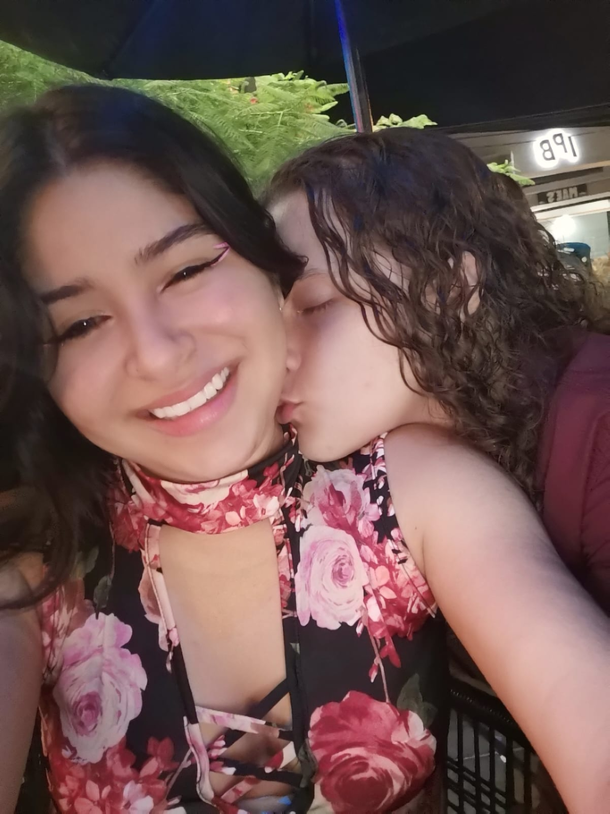
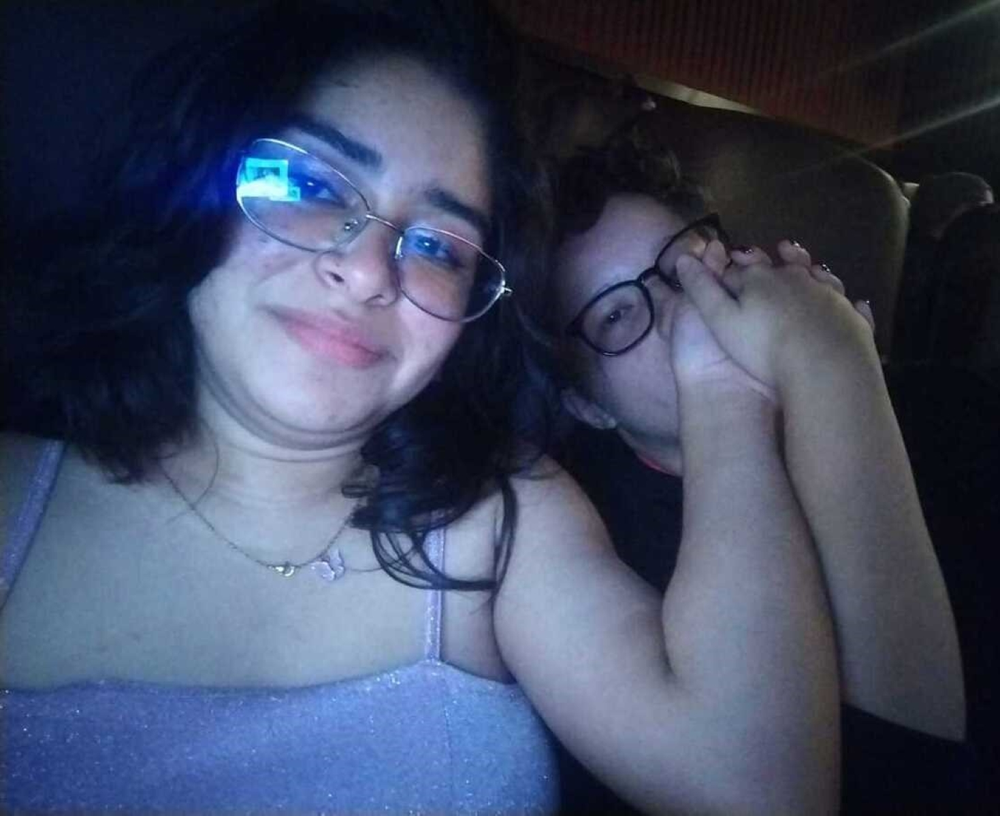
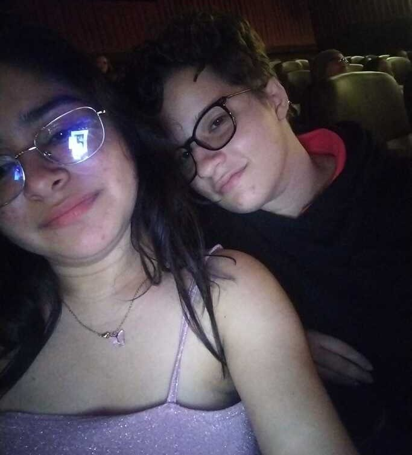
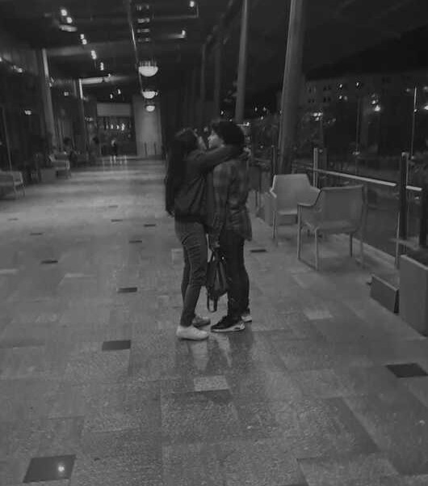

De Ange
En estos maravillosos 11 años juntos, hemos construido una travesía única, llena de risas compartidas, desafíos superados y momentos que han forjado nuestra conexión especial. Al mirar hacia atrás, me llena de gratitud pensar en todos esos capítulos que hemos escrito juntos.
En este tiempo, hemos descubierto cada faceta de la otra, explorando nuestras almas y compenetrándonos en cada experiencia. Conozco tus reacciones al hablar, tus pasiones más profundas, y es un regalo invaluable tener la certeza de que vislumbras un futuro a mi lado.
En los momentos buenos, hemos celebrado con alegría, y en los desafíos, hemos demostrado que juntos somos imparables. Aprecio cada risa compartida, cada abrazo reconfortante y cada palabra de aliento que hemos intercambiado a lo largo de estos años.
Hoy, en este día especial, quiero reafirmar mi compromiso contigo. Eres mi confidente, mi compañera de vida y el faro que ilumina mi camino. Estoy emocionada por los años que aún nos esperan, llenos de nuevas aventuras, crecimiento conjunto y, por supuesto, más amor.
En este San Valentín, celebro no solo el amor que compartimos, sino también la belleza de lo que hemos construido juntos. Que nuestro viaje continúe siendo tan extraordinario como hasta ahora, y que cada día nos acerque aún más.
En este tiempo, hemos descubierto cada faceta de la otra, explorando nuestras almas y compenetrándonos en cada experiencia. Conozco tus reacciones al hablar, tus pasiones más profundas, y es un regalo invaluable tener la certeza de que vislumbras un futuro a mi lado.
En los momentos buenos, hemos celebrado con alegría, y en los desafíos, hemos demostrado que juntos somos imparables. Aprecio cada risa compartida, cada abrazo reconfortante y cada palabra de aliento que hemos intercambiado a lo largo de estos años.
Hoy, en este día especial, quiero reafirmar mi compromiso contigo. Eres mi confidente, mi compañera de vida y el faro que ilumina mi camino. Estoy emocionada por los años que aún nos esperan, llenos de nuevas aventuras, crecimiento conjunto y, por supuesto, más amor.
En este San Valentín, celebro no solo el amor que compartimos, sino también la belleza de lo que hemos construido juntos. Que nuestro viaje continúe siendo tan extraordinario como hasta ahora, y que cada día nos acerque aún más.